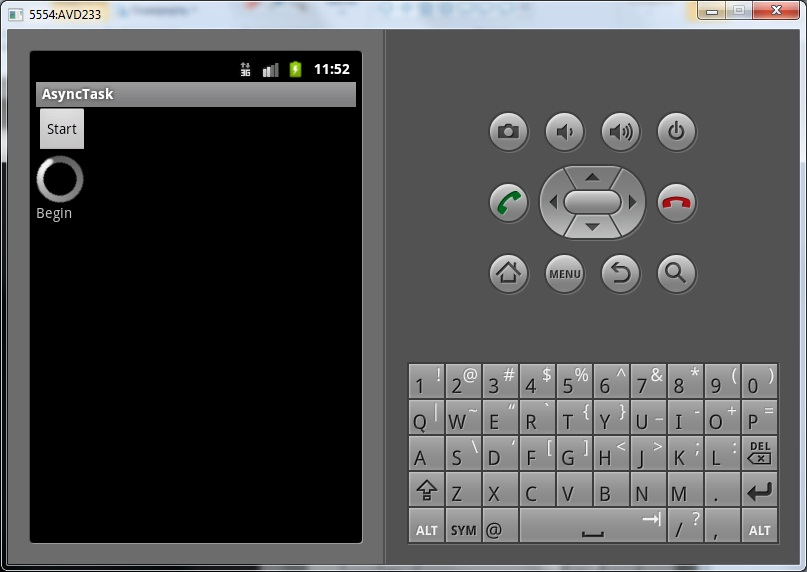
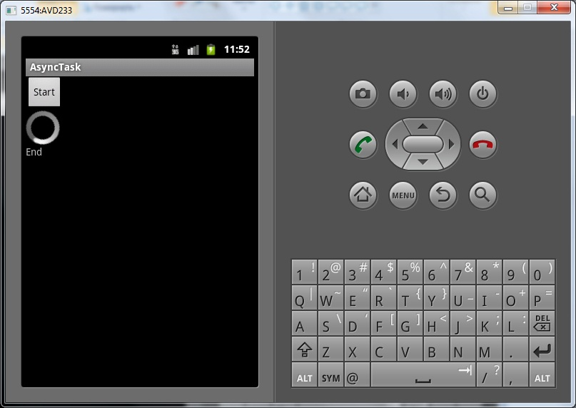

В этом уроке:
- создаем несложный пример с AsyncTask
На прошлых уроках мы рассматривали, как в приложении можно выполнять тяжелые задачи. Мы вводили их в отдельный поток и использовали Handler для обратной связи и обновления экрана. Создатели Android решили, что эти механизмы стоит выделить в отдельный класс – AsyncTask. Т.е. его цель – это выполнение тяжелых задач и передача в UI-поток результатов работы. Но при этом нам не надо задумываться о создании Handler и нового потока.
Чтобы работать с AsyncTask, надо создать класс-наследник и в нем прописать свою реализацию необходимых нам методов. На этом уроке рассмотрим три метода:
doInBackground – будет выполнен в новом потоке, здесь решаем все свои тяжелые задачи. Т.к. поток не основной - не имеет доступа к UI.
onPreExecute – выполняется перед doInBackground, имеет доступ к UI
onPostExecute – выполняется после doInBackground (не срабатывает в случае, если AsyncTask был отменен - об этом в следующих уроках), имеет доступ к UI
Сделаем простое приложение, в котором используем вышеуказанные методы. Выведем на экран слово Begin в методе onPreExecute, эмулируем тяжелый код в методе doInBackground, выведем на экран слово End в методе onPostExecute.
Создадим проект:
Project name: P0861_AsyncTask
Build Target: Android 4.0
Application name: AsyncTask
Package name: ru.startandroid.develop.p0861asynctask
Create Activity: MainActivity
strings.xml:
<?xml version="1.0" encoding="utf-8"?>
<resources>
<string name="app_name">AsyncTask</string>
<string name="start">Start</string>
</resources>main.xml:
<?xml version="1.0" encoding="utf-8"?>
<LinearLayout
xmlns:android="http://schemas.android.com/apk/res/android"
android:layout_width="fill_parent"
android:layout_height="fill_parent"
android:orientation="vertical">
<Button
android:layout_width="wrap_content"
android:layout_height="wrap_content"
android:onClick="onclick"
android:text="@string/start">
</Button>
<ProgressBar
android:layout_width="wrap_content"
android:layout_height="wrap_content">
</ProgressBar>
<TextView
android:id="@+id/tvInfo"
android:layout_width="wrap_content"
android:layout_height="wrap_content"
android:text="">
</TextView>
</LinearLayout>По нажатию кнопки будем стартовать задачу, в TextView выводить информацию. ProgressBar покажет, что приложение не "висит" во время выполнения.
MainActivity.java:
package ru.startandroid.develop.p0861asynctask;
import java.util.concurrent.TimeUnit;
import android.app.Activity;
import android.os.AsyncTask;
import android.os.Bundle;
import android.view.View;
import android.widget.TextView;
public class MainActivity extends Activity {
MyTask mt;
TextView tvInfo;
public void onCreate(Bundle savedInstanceState) {
super.onCreate(savedInstanceState);
setContentView(R.layout.main);
tvInfo = (TextView) findViewById(R.id.tvInfo);
}
public void onclick(View v) {
mt = new MyTask();
mt.execute();
}
class MyTask extends AsyncTask<Void, Void, Void> {
@Override
protected void onPreExecute() {
super.onPreExecute();
tvInfo.setText("Begin");
}
@Override
protected Void doInBackground(Void... params) {
try {
TimeUnit.SECONDS.sleep(2);
} catch (InterruptedException e) {
e.printStackTrace();
}
return null;
}
@Override
protected void onPostExecute(Void result) {
super.onPostExecute(result);
tvInfo.setText("End");
}
}
}В методе onclick мы создаем объект MyTask и запускаем его методом execute.
MyTask – это наш класс, наследующий AsyncTask. В нем мы прописываем свой код.
В методе onPreExecute выводим текст Begin.
В методе doInBackground эмулируем тяжелый код - делаем паузу на две секунды.
В методе onPostExecute выводим текст End.
Все сохраним и запустим приложение. Жмем Start, появляется текст Begin

ProgressBar работает, значит, основной поток (отвечающий за UI) - свободен.
Через две секунды появляется текст End

Мы получили работающую в новом потоке задачу и доступ к UI. При этом сами не создавали потоков и Handler, за нас все сделал AsyncTask.
Из рассмотренных методов обязательно надо реализовать только doInBackground. Остальные два – по желанию.
Этот пример показывает самые простые возможности. Мы везде использовали Void, чтобы пока не возиться с параметрами. Их и прочие возможности мы рассмотрим подробнее в следующих уроках. Пока что необходимо усвоить, в какой последовательности, и в каких потоках выполняются рассмотренные нами методы AsyncTask.
Обратите внимание, что если мы нажмем на Start, пока работает AsyncTask, то создастся и запустится новый AsyncTask. Но старый при этом никуда не денется, и продолжит работу в своем потоке. Т.е. они оба будут работать и обновлять один и тот же экран. Позже мы узнаем, как с этим можно справиться.
Официальная документация дает 4 правила использования AsyncTask, я также укажу их здесь:
- объект AsyncTask должен быть создан в UI-потоке
- метод execute должен быть вызван в UI-потоке
- не вызывайте напрямую методы onPreExecute, doInBackground, onPostExecute и onProgressUpdate (последний мы пока не проходили)
- AsyncTask может быть запущен (execute) только один раз, иначе будет exception